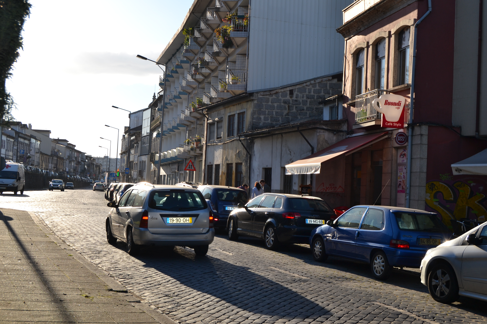
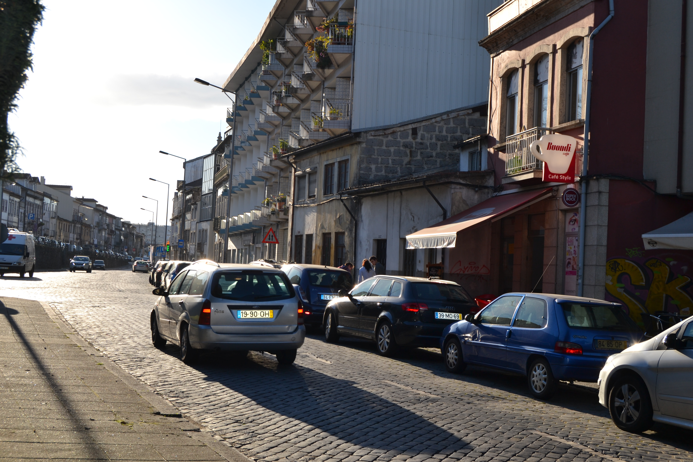

Cangosta da Escoura
Imagens antigas:


Imagens atuais:
 

Descrição:
Pequena artéria, de carácter rural, estabelecia ligação entre a igreja de S. Vicente e a igreja e convento do Carmo. igreja de S. Vicente e a igreja e convento do Carmo.
Aberta em data que desconhecemos, não está totalmente representada no Mappa; nele só vemos a metade Este, embora de ambos os lados.
Sem casas dignas de relevo, apresenta do lado Sul uma série de portas que davam acesso aos quintais das habitações da rua dos Chãos de Cima. Aliás todo este lado era pertença das casas daquela rua, pois que até os 4 edifícios (n.ºs 8, 24, 27 e 28) nele representados pertenciam, respectivamente, aos seus prazos n.ºs 46, 27, 23 e 22. rua dos Chãos de Cima. Aliás todo este lado era pertença das casas daquela rua, pois que até os 4 edifícios (n.ºs 8, 24, 27 e 28) nele representados pertenciam, respectivamente, aos seus prazos n.ºs 46, 27, 23 e 22.
Do lado Norte, há apenas 5 pequenas casinhas totalmente ligadas aos campos que as envolviam: assim a casa do prazo n.ºs 30 e 31 andam emprazadas juntamente com o campo n.º 29, e as casas 32, 33 e 35 estavam também todas subemprazadas com os quintais n.º 34 e 36 num só título.
Todas estas casas são foreiras ao cabido.
Desde 14 de Setembro de 1885 que passou a chamar-se rua Gabriel Pereira de Castro. Apesar das placas toponímicas existentes no local competente terem gravado este nome é apenas conhecida como rua da Escoura. 14 de Setembro de 1885 que passou a chamar-se rua Gabriel Pereira de Castro. Apesar das placas toponímicas existentes no local competente terem gravado este nome é apenas conhecida como rua da Escoura.
Lista das casas
-
Número 1 Enfiteuta ??? Foro ??? Descrição Pertence à casa n.º 9 da Rua das Palhotas, para onde tem frontaria e serventia principais. Rua das Palhotas, para onde tem frontaria e serventia principais.
-
Número 2 Enfiteuta ??? Foro ??? Descrição Porta de serventia do quintal da casa n.° 52 da Rua dos Chãos de Cima. Rua dos Chãos de Cima.
-
Número 3 Enfiteuta ??? Foro ??? Descrição Quintal da casa n.º 51 da Rua dos Chãos de Cima. Rua dos Chãos de Cima.
-
Número 4 Enfiteuta ??? Foro ??? Descrição Porta de serventia da casa n.º 50 da Rua dos Chãos de Cima. Rua dos Chãos de Cima.
-
Número 5 Enfiteuta ??? Foro ??? Descrição Porta de serventia do quintal da casa n.º 49 da Rua dos Chãos de Cima. Rua dos Chãos de Cima.
-
Número 6 Enfiteuta ??? Foro ??? Descrição Porta de serventia do quintal da casa n.º 48 da Rua dos Chãos de Cima. Rua dos Chãos de Cima.
-
Número 7 Enfiteuta ??? Foro ??? Descrição Porta de serventia do quintal da casa n.º 47 da Rua dos Chãos de Cima. Rua dos Chãos de Cima.
-
Número 8 Enfiteuta ??? Foro ??? Descrição Pertença do n.º 46 da Rua dos Chãos de Cima. Rua dos Chãos de Cima.
-
Número 9 Enfiteuta ??? Foro ??? Descrição Quintal da casa n.º 45 da Rua dos Chãos de Cima. Rua dos Chãos de Cima.
-
Número 10 Enfiteuta ??? Foro ??? Descrição Quintal da casa n.º 44 da Rua dos Chãos de Cima. Rua dos Chãos de Cima.
-
Número 11 Enfiteuta ??? Foro ??? Descrição Quintal da casa n.º 43 da Rua dos Chãos de Cima. Rua dos Chãos de Cima.
-
Número 12 Enfiteuta ??? Foro ??? Descrição Quintal da casa n.º 42 da Rua dos Chãos de Cima. Rua dos Chãos de Cima.
-
Número 13 Enfiteuta ??? Foro ??? Descrição Quintal da casa n.º 41 da Rua dos Chãos de Cima. Rua dos Chãos de Cima.
-
Número 14 Enfiteuta ??? Foro ??? Descrição Quintal da casa n.º 40 da Rua dos Chãos de Cima. Rua dos Chãos de Cima.
-
Número 15 Enfiteuta ??? Foro ??? Descrição Porta de serventia do quintal da casa n.º 39 da Rua dos Chãos de Cima. Rua dos Chãos de Cima.
-
Número 16 Enfiteuta ??? Foro ??? Descrição Porta de serventia do quintal da casa n.º 38 da Rua dos Chãos de Cima. Rua dos Chãos de Cima.
-
Número 17 Enfiteuta ??? Foro ??? Descrição Porta de serventia do quintal da casa n.º 37 da Rua dos Chãos de Cima. Rua dos Chãos de Cima.
-
Número 18 Enfiteuta ??? Foro ??? Descrição Porta de serventia do quintal da casa n.º 36 da Rua dos Chãos de Cima. Rua dos Chãos de Cima.
-
Número 19 Enfiteuta ??? Foro ??? Descrição Porta de serventia do quintal da casa n.º 35 da Rua dos Chãos de Cima. Rua dos Chãos de Cima.
-
Número 20 Enfiteuta ??? Foro ??? Descrição Quintal da casa n.º 34 da Rua dos Chãos de Cima. Rua dos Chãos de Cima.
-
Número 21 Enfiteuta ??? Foro ??? Descrição Porta de serventia dos quintais das casas n.ºs 32 e 33 da Rua dos Chãos de Cima. Rua dos Chãos de Cima.
-
Número 22 Enfiteuta ??? Foro ??? Descrição Porta de serventia do quintal da casa n.º 31 da Rua dos Chãos de Cima. Rua dos Chãos de Cima.
-
Número 23 Enfiteuta ??? Foro ??? Descrição Caminho de serventia das casas n.ºs 28, 29 e 30 da Rua dos Chãos de Cima. Rua dos Chãos de Cima.
-
Número 24 Enfiteuta ??? Foro ??? Descrição Pertence ao n.º 27 da Rua dos Chãos de Cima. Rua dos Chãos de Cima.
-
Número 25 Enfiteuta ??? Foro ??? Descrição Porta de serventia da casa n.º 26 da Rua dos Chãos de Cima. Rua dos Chãos de Cima.
-
Número 26 Enfiteuta ??? Foro ??? Descrição Quintal da casa n.° 25 da Rua dos Chãos de Cima. Rua dos Chãos de Cima.
-
Número 27 Enfiteuta ??? Foro ??? Descrição Pertence ao n.º 23 da Rua dos Chãos de Cima Rua dos Chãos de Cima
-
Número 28 Enfiteuta ??? Foro ??? Descrição Pertence ao n.º 22 da Rua dos Chãos de Cima Rua dos Chãos de Cima
-
Número 29 Enfiteuta Pedro Francisco Rodrigues, da rua dos Chãos de Cima, c.c. Maria de Matos Vieira Foro 100 reis e 1 alqueire de trigo Descrição Denominado “Campo ou Cortelho da Escoura”. Foi pertença do prazo do casal de Infias antes de 1736. casal de Infias antes de 1736.
-
Número 30 Enfiteuta ??? Foro ??? Descrição Pertence ao prazo do Campo ou Cortelho da Escoura.
-
Número 31 Enfiteuta ??? Foro ??? Descrição Pertence ao prazo do Campo ou Cortelho da Escoura.
-
Número 32 a 36 Enfiteuta Isabel Maria da Silva, viúva do Dr. Santos de Araújo Alves, enfiteuta principal do prazo da 1.ª metade do casal do Lagarto. Foro ??? Descrição Pagam foro ao enfiteuta do prazo da 2.ª metade do casal do Lagarto. Os n.º 34 e 36 correspondem a quintais. casal do Lagarto. Os n.º 34 e 36 correspondem a quintais.
-
Número 37 Enfiteuta ??? Foro ??? Descrição Quintal da casa n.° 38.
-
Número 38 Enfiteuta ??? Foro ??? Descrição Pertence à casa n.° 10 da Rua das Palhotas, para onde tem a frontaria principal. Rua das Palhotas, para onde tem a frontaria principal.